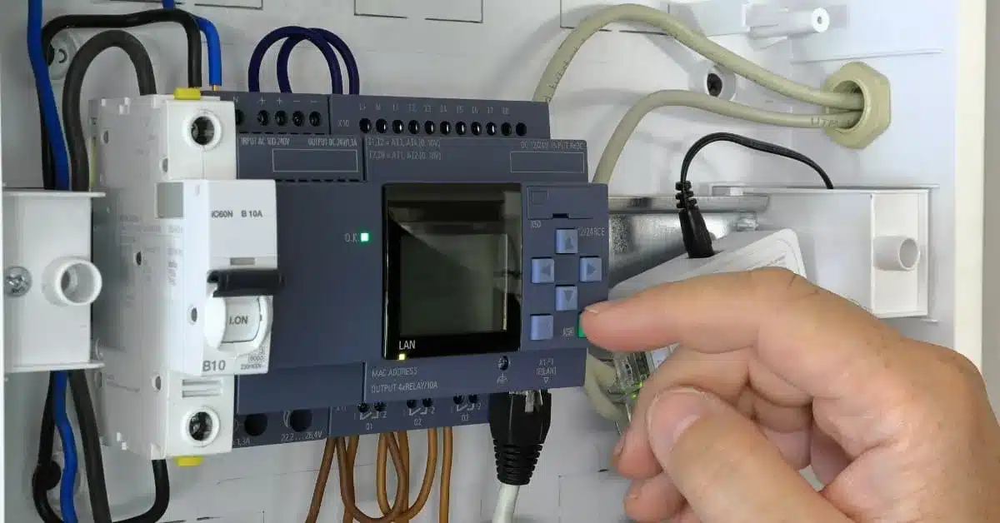
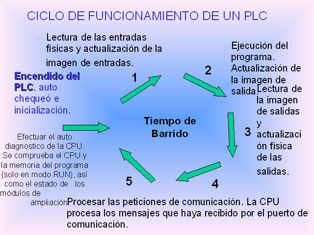

¿Cómo funciona un PLC?
Un PLC funciona como un cerebro electrónico que recibe señales de entrada desde sensores, botones o interruptores. Estas señales son procesadas internamente por el PLC de acuerdo con un programa cargado por el usuario.
Después de procesar la información, el PLC envía señales de salida que activan dispositivos como motores, luces, alarmas o válvulas.
Esto le permite gestionar procesos complejos de forma automática, garantizando eficiencia, seguridad y rapidez en entornos industriales como fábricas, plantas de embotellado, sistemas de riego o líneas de ensamblaje. Gracias a su robustez, flexibilidad y capacidad de reprogramación, los PLC son una herramienta clave en la automatización industrial moderna, permitiendo reducir errores humanos, aumentar la productividad y facilitar el mantenimiento.
El funcionamiento de un PLC se basa en un ciclo continuo de lectura, procesamiento y salida. Este ciclo se repite constantemente, permitiendo al PLC adaptarse a cambios en el entorno y responder de manera eficiente a las condiciones de operación.